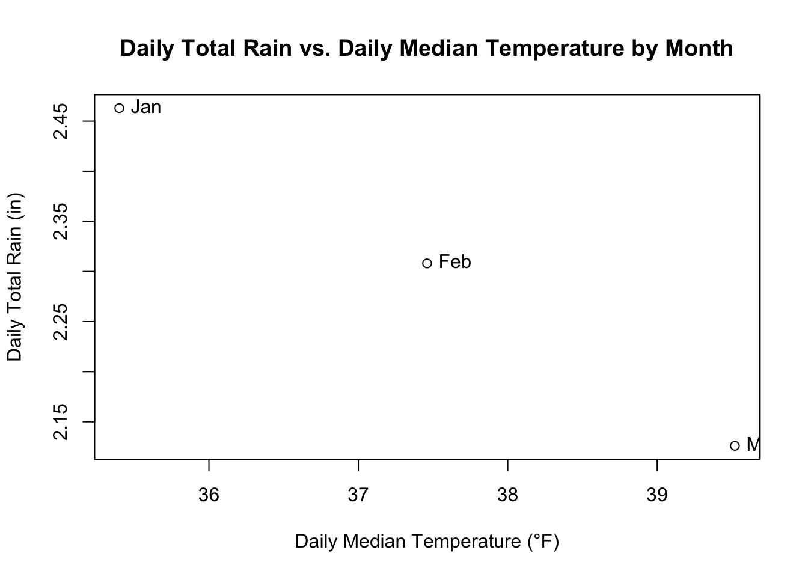

# Filter for January data and calculate total rainfall per weekday
jan_data <- rice_cleaned %>%
filter(Month == "Jan") %>%
group_by(Weekday) %>%
summarize(Total_Rain = sum(Rain_in))
# Create a bar plot
barplot(jan_data$Total_Rain, names.arg = jan_data$Weekday,
main = "Total Rainfall in January by Weekday",
xlab = "Weekday", ylab = "Total Rainfall (in)")Graphics
Abstract
This Quarto document presents a comprehensive analysis of environmental data collected by the Rice Rivers Center. Utilizing a dataset derived from a previously written script, the analysis addresses various questions related to precipitation, temperature, water depth, and wind direction.
Graphics Assignment
Calling in Packages and Rice Function. (Hidden)
Total Rain for Each Weekday in January. (Base R)
Total Rain for Each Weekday in January. (ggplot)
ggplot(jan_data, aes(x = Weekday, y = Total_Rain)) +
geom_bar(stat = "identity", fill = "skyblue", alpha = 0.8) +
geom_text(aes(label = Total_Rain), vjust = -0.3, size = 3) +
labs(title = "Total Rainfall in January by Weekday",
x = "Weekday", y = "Total Rainfall (in)") +
theme_minimal() +
theme(axis.text.x = element_text(angle = 45, hjust = 1),
panel.grid.major.x = element_blank())Average daily temperature for weekdays in February. (Base R)
# Filter for February data and calculate average temperature per weekday
feb_data <- rice_cleaned %>%
filter(Month == "Feb") %>%
group_by(Weekday) %>%
summarize(Avg_Temp = mean(AirTempF))
# Create a bar plot
barplot(feb_data$Avg_Temp, names.arg = feb_data$Weekday,
main = "Average Daily Temperature in February by Weekday",
xlab = "Weekday", ylab = "Average Temperature (°F)")Average daily temperature for weekdays in February. (ggplot)
ggplot(feb_data, aes(x = Weekday, y = Avg_Temp)) +
geom_bar(stat = "identity", fill = "blue", alpha = 0.8) +
geom_text(aes(label = round(Avg_Temp, 1)), vjust = -0.3, size = 3) +
labs(title = "Average Daily Temperature in February by Weekday",
x = "Weekday", y = "Average Temperature (°F)") +
theme_minimal() +
theme(axis.text.x = element_text(angle = 45, hjust = 1),
panel.grid.major.x = element_blank())Water depth on Valentine’s Day. (Base R)
# Filter for Valentine's Day data and convert "DateTime" to a time object
valentines_data <- rice_cleaned %>%
filter(Month == "Feb" & Day == 14) %>%
mutate(Time = format(DateTime, "%H:%M"))
# Create a dot plot
plot(valentines_data$DateTime, valentines_data$Depth_ft, type = "l",
main = "Water Depth on Valentine's Day by Time",
xlab = "Time", ylab = "Water Depth (ft)")Water depth on Valentine’s Day. (ggplot)
# Create a dot plot using ggplot
ggplot(valentines_data, aes(x = Time, y = Depth_ft)) +
geom_line(color = "blue") +
geom_point(size = 3, color = "blue") +
labs(title = "Water Depth on Valentine's Day by Time",
x = "Time", y = "Water Depth (ft)") +
theme_minimal() +
theme(axis.text.x = element_text(angle = 45, hjust = 1, size = 4))`geom_line()`: Each group consists of only one observation.
ℹ Do you need to adjust the group aesthetic?Scatter plot of Daily Total Rain and Daily Median Temperature grouped by month (label the centroid of months). (Base R)
# Calculate daily total rain and median temperature by month
monthly_data <- rice_cleaned %>%
group_by(Month) %>%
summarize(Total_Rain = sum(Rain_in),
Median_Temp = median(AirTempF))
# Create a scatter plot
plot(monthly_data$Median_Temp, monthly_data$Total_Rain,
main = "Daily Total Rain vs. Daily Median Temperature by Month",
xlab = "Daily Median Temperature (°F)", ylab = "Daily Total Rain (in)") +
text(monthly_data$Median_Temp, monthly_data$Total_Rain,
labels = month.abb[monthly_data$Month], pos = 4)
integer(0)Scatter plot of Daily Total Rain and Daily Median Temperature grouped by month (label the centroid of months). (ggplot)
ggplot(monthly_data, aes(x = Median_Temp, y = Total_Rain)) +
geom_point(size = 3) +
geom_text(aes(label = month.abb[Month]), vjust = -0.3) +
labs(title = "Daily Total Rain vs. Daily Median Temperature by Month",
x = "Daily Median Temperature (°F)", y = "Daily Total Rain (in)") +
theme_minimal()Wind Direction during the week containing the 8th of January -> January 5th to the 11th. (Base R)
# Filter for the specific time period from January 5th to 11th
week_data <- rice_cleaned %>%
filter(DateTime >= ymd_hms("2014-01-05 05:00:00") &
DateTime <= ymd_hms("2014-01-12 05:00:00")) %>%
mutate(Time = format(DateTime, "%H:%M"))
plot(week_data$DateTime, week_data$WindDir,
type = "l", xlab = "Date and Time", ylab = "Wind Direction (degrees)")
Wind Direction during the week containing the 8th of January. (ggplot)
ggplot(week_data, aes(x = DateTime, y = WindDir)) +
geom_line() +
labs(x = "Date & Time", y = "Wind Direction (degrees)") +
theme_minimal()+
scale_x_datetime(date_breaks = "1 day", date_labels = "%d %b")Wind Direction during the week containing the 8th of January. (ggplot - wind rose)
I couldn’t figure out how to make the dates look better and keep it as one graph. I thought this was useful to understand the different directions throughout the time period; however, it is not the best at showing time and direction at the same time since there are so many data points.
ggplot(week_data, aes(x = factor(WindDir))) +
geom_bar(width = 0.6, fill = "darkgreen") +
coord_polar(start = 0, direction = 1) +
scale_x_discrete(labels = c("N", "NE", "E", "SE", "S", "SW", "W", "NW", "N")) +
theme_classic() +
theme(axis.text.x = element_text(size = 4)) + # Adjust font size
labs(title = "Wind Direction Distribution",
x = "Wind Direction (Degrees)",
y = "Frequency") +
annotate(geom = "text", x = 1, y = 0, label = "N", size = 4, angle = -45)